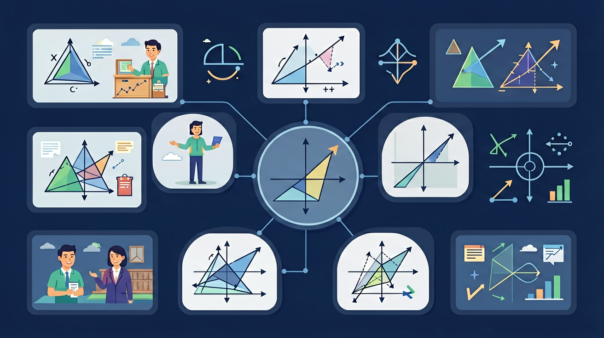

🎯 能说出概率的三种基本定义（古典/统计/主观）
🎯 能判断事件属于必然、不可能或随机事件
🎯 能计算简单古典概型问题的概率值
❓ 为什么抛硬币正反面概率不是绝对的50%？
❓ 游戏抽卡概率写着1%，抽100次就一定能中吗？
❓ 天气预报说降水概率80%，到底会不会下雨呀？
学完这一课，这些问题你都能自信地回答。
袋中3红2白球，摸到红球的概率是？
下列属于不可能事件的是？
必然事件概率为 1，不可能事件概率为 0，随机事件概率介于 0 与 1 之间。在等可能情形下，事件 A 的概率等于 A 包含的结果数除以所有等可能结果数。列表法与树状图可以帮助不重不漏地列出所有结果。
两步试验优先画树状图；注意“至少”“恰好”等表述，必要时用 1 减去对立事件的概率更快。
常见误区：常见误区是把“抛两枚硬币”的结果只算成三种（正正、一正一反、反反），忽略一正一反有两种情形。
下列事件属于必然事件的是？
同时抛两枚均匀硬币，至少出现一次正面的概率是？
And：学生知道事件可能发生或不发生
But：不清楚如何量化可能性大小
Therefore：用数值描述可能性，建立概率概念
概率是事件发生可能性的数值表示，范围在0到1之间。比如抛硬币时，正面朝上的概率是0.5，因为所有可能结果有2种（正/反），符合条件的结果有1种。概率=符合条件的结果数÷所有可能结果数。
🌍 天气预报说「降水概率30%」意味着10天里大约有3天会下雨。
从标号1-5的卡片随机抽一张，抽到偶数的概率是？
And：学生已会计算简单概率
But：遇到多步骤事件时易遗漏情况
Therefore：用系统列举法避免遗漏
当事件有多个步骤时，用树状图或表格列举所有可能结果。例如同时掷两枚骰子，点数和为7的概率：先画6×6的表格列出36种组合，其中有(1,6)(2,5)...(6,1)共6种符合条件，概率就是6/36=1/6。
🌍 就像餐厅点套餐：主餐3种×饮料2种=6种点单组合。
用1元、5角硬币各一枚抛掷，出现「一正一反」的概率？
And：学生理解理论概率计算
But：容易混淆理论值与实际试验结果
Therefore：通过实验理解大数定律
理论概率是预测值（如骰子出6的概率是1/6），实际试验中出现的比例叫频率。当试验次数很少时频率可能偏离概率，但试验次数越多频率越接近概率。比如掷骰子600次，出现6点的次数通常会接近100次。
🌍 就像抽卡游戏：单抽可能歪，但抽100次大概率接近官方公布的概率。
掷硬币10次出现8次正面，说明：
And：学生会计算单一事件概率
But：遇到「至少」「不超过」类问题易错
Therefore：用1减反向概率简化计算
事件A的对立事件是「A不发生」，其概率=1-P(A)。比如抽奖中奖概率是0.2，那么不中奖概率就是1-0.2=0.8。适用于求「至少一个」类问题：3人各掷一次骰子，至少一人出6的概率=1-(5/6×5/6×5/6)≈0.421。
🌍 就像考试及格率60%，那么不及格率就是40%。
袋子有3红2白球，抽两次（不放回），至少抽到1个红球的概率是？
开放任务：用三步写出你如何向同学讲清「概率初步」。
把复合事件拆解为独立事件的和或积
概率是0到1之间的数，表示事件发生的可能性大小
对比古典概型（等可能）与统计概率（频率稳定值）
用树状图/列表法可视化多步实验的概率
用概率解释保险费用定价原理
关于概率的说法正确的是
用两种不同骰子（标准/非标准）各投掷60次
💡 大量试验，用频率估计概率。
外链：https://phet.colorado.edu/sims/html/plinko-probability/latest/plinko-probability_zh_CN.html
先独立作答，再点选项查看对错与错因。
若转盘正常无偏移，抽中特等奖的概率是
实际偏移情况下，8号区域圆心角为多少度？(标准区域30°)
下列哪种情况属于必然事件？
实际情况下，抽中一等奖的概率是____（保留两位小数）
答案：0.11
7号区域仍为30°，总角度360°-39°+30°=351°，30/351≈0.085
若再增加一个相同的8号区域，此时特等奖概率变为____（分数表示）
答案：13/180
两个8号区域共78°，78/360=13/60
✅ 独立事件的概率不受历史结果影响
💡 混淆‘赌徒谬误’与条件概率
✅ 确保分子分母计数规则一致
💡 未区分有序排列与无序组合
口诀：概率计算三步走，列举除总再比较
类比：就像天气预报的降水概率，80%表示十次类似天气大约八次会下雨
（中考真题）同时掷两枚骰子，点数和为5的概率是？
天气预报三天降水概率均为30%，至少有一天降水的概率约是？
抽奖箱有10张券（2中奖），甲先抽乙后抽，说法正确的是？
点击节点跳转到对应章节；可切换布局。